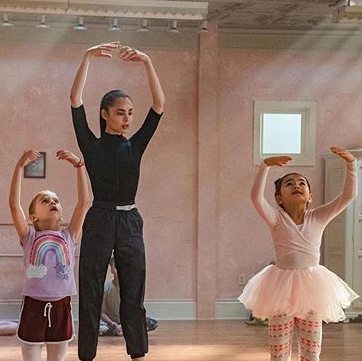
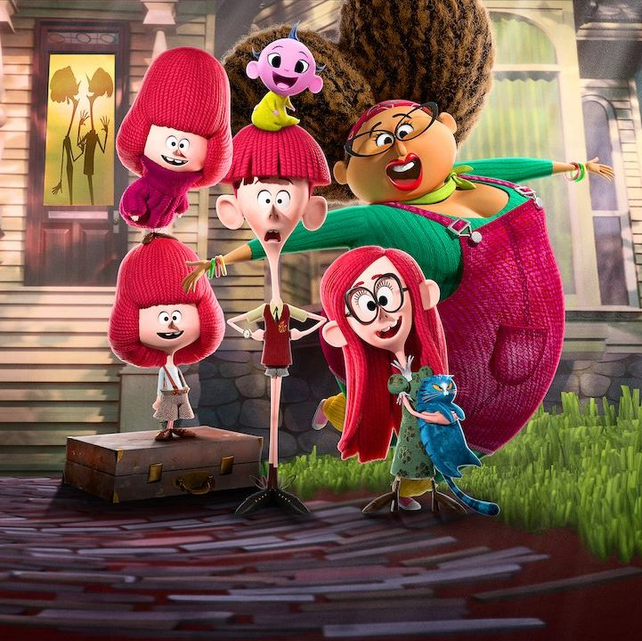
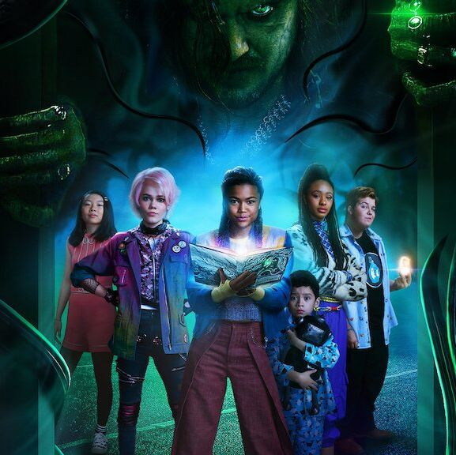
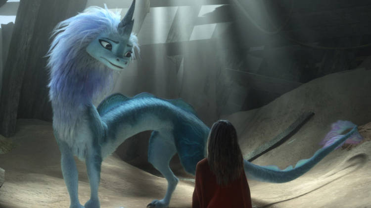

Sample of favourite movies to be viewed by 9-12 year kid
This is a computer generated and animated adventure produced by Dreamworks Animation and Pearl studios.Written and directed by Todd Wilberman staring the roles of Chloe Bennet among others revolving around a teenage girl named Yi who encounters a young Yeti on the prior of her apartment building naming him Everest. Yi embarks on an epic journey to reunite the Yeti with its family on the highest point on earth with the help of her friends Jin and Peng. The Yeti is haunted by a wealthy businessman Burush and zoologist Dr.Zara whose intent is to capture and mint money by showing it off to the world. Their journey is full of hurdles but will they accomplish the mission successfully.Seems you need to watch it because it is highly ranked with 6 stars by critics.
An American dance drame-dy directed by Elissa Dawn and written by Shawn Ku, starring Sofia Casson among others.The movie revolves around a young dancer seeking success in Broadway auditions for a dance competition which she makes it and meets other pontential dancers to form New hope dancers. She manages to dance on Willy Wong's show in Newyork at the peek of her career at the same time coaching her team via video chatlive dance classes. Good family show that can be watched by all members of the family with a critical review of 5 stars.
Revolves around the story of the Willoughbys once a loving family and adventurous generation who neglect their responsiblities of taking care of their four children. The neglected kids find themselves in a foster home but are adopted by Linda(nanny) and live with them at the candy factory as a loving family whereas the Mr and Mrs Willoughbys are devoured by a shark where their diligible crashes.
An american family horror film directed by Rachel Talaky and distributed by Netflix. Written by Joe Ballarni featuring ,starring Shiya Moore among others. Revolves around Betty Fergusson a babysitter on a mission to find the child in her care who has been kidnapped by the Boogeyman on a halloween night later discovering that a secret society of child-protecting baby sitters exist to fight the entire world of monsters. Great movie to watch with family and friends as critic ratings indicate 6 stars out of the possible 10.
An American computer animated action film produced and distributed by Walt disney pictures and animation studios motion pictures.Revolves around Raya a daughter to a certain powerful chief Benja of a native tribe who tries to guard the orb created by the dragons of Karamanda to ward off the Druun which are evil spirits that petrify people and multiply after absorbing their life force dividing the Karamanda people into tribes based on their placement along a giant river that resembles a dragon and Raya is tasked with reuniting the tribes.Critic reviews quite encouraging with 8 stars hence a great show to invest that free time out there.
